방사선비파괴검사기사(구) (2006-09-10 기출문제)
1과목: 방사선투과시험원리
1. 다음 중 방사선투과검사로 가장 검출이 어려운 결함은?
- 언더 컷(Under cut)
- 라미네이션(Iamination)
- 블로 홀(Blow hole)
- 균열(crack)
(정답률: 알수없음)

2. 다음 중 광량자의 산란과 관계가 깊은 것은?
- 원자핵과 관계가 있다.
- 궤도전자보다 물질내의 자유전자와의 상호작용으로 발생한다.
- 광량자는 소멸하고 전자가 원자 밖으로 튀어나오는 현상이다.
- 1.20MeV 이상의 광량자가 소멸하고 음ㆍ양 한 쌍의 전자를 생성한다.
(정답률: 알수없음)
3. 밀봉되지 않은 방사성 동위원소에서 방출하는 선량율이 100feet 거리에서 900mR/h이면 300feet에서의 선량율은?
- 100mR/h
- 300mR/h
- 600mR/h
- 2700mR/h
(정답률: 알수없음)
4. Co-60에 대한 납의 반가층이 4.1cm 일 때 Co-60 의 어느 지점에서의 방사선 강도가 160mR/h이다. 납판으로 차폐하여 강도를 20mR/h로 줄이는데 필요한 납의 두께(cm)는 얼마인가?
- 12.3
- 15.8
- 16.4
- 19.2
(정답률: 알수없음)
5. 명료도(Definition)란 방사선 투과사진상의 흐림의 정도를 나타내는 용어이다. 다음 중 명료도에 영향을 주는 것이 아닌 것은?
- 방사선의 선질
- 스크린-필름간 접속 상태
- 필름의 입상성
- 필름의 농도
(정답률: 알수없음)
6. 스테인리스 강으로 만든 밸브 내면에 끼운 동그란 모양의 고무링이 잘 끼워졌는지 여부를 파악하기 위한 비파괴검사법으로 다음 중 가장 적당한 것은?
- X-선 투과시험
- 중성자투과시험
- 초음파탐상시험
- 와전류탐상시허
(정답률: 알수없음)
7. 다음 중 열중성자(Thermal neutron)를 이용하는 방사선 투과검사의 에너지 범위로 맞는 것은?
- 0.01eV 이하
- 0.01 - 0.6eV
- 0.3 - 10,000eV
- 10keV - 20keV
(정답률: 알수없음)
8. 방사선의 흡수선량을 나타내는 단위로, 물질 1g 당 100erg의 에너지를 흡수하는 방사선의 양을 표시하는 것은?
- rem
- rad
- Sv
- Gy
(정답률: 알수없음)
9. 연박증감지를 사용하여 방사선투과시험을 한 결과 선명도가 좋지 않았다. 그 개선책으로 옳은 것은?
- 입도가 큰 필름을 사용한다.
- 초점이 큰 선원을 사용한다.
- 형광 증감지를 사용한다.
- 선원과 필름간의 거리를 증가시킨다.
(정답률: 알수없음)
10. γ선과 물질과의 상호작용에서 γ선 에너지가 2moC2이상이라야 일어날 수 있는 상호작용은? (단, 여기서 mo와 C는 각각 전자의 정지질량과 광속도를 나타낸다.)
- 광전효과
- 콤프턴산란
- 전자쌍생성
- Auger 효과
(정답률: 알수없음)
11. X선과 γ선의 일반적 특성을 설명한 것이다. 틀린 것은?
- 동일 종류의 방사선이다.
- 오감으로는 측정할 수 없다.
- 에너지의 파형을 갖는 전자기 방사선이다.
- 매우 긴 파장과 매우 낮은 주파수를 갖는다.
(정답률: 알수없음)
12. 다음 중 방사선투과시험의 필터(filter)의 영향에 대한 설명으로 잘못된 것은?
- 필터는 방사선을 연화(softening)시키므로 과잉의 피사체 콘트라스트를 줄인다.
- 장파장의 방사선은 단파장의 방사선량만큼 필터를 투과하지 못한다.
- 필터를 사용하면 전압을 올리는 것과 유사한 효과를 얻는다.
- 필터를 사용하면 전체 방사선의 강도를 감소시킨다.
(정답률: 알수없음)
13. 방사선 투과사진의 감도에 영향을 미치는 시험체 콘트라스트와 관계가 먼 것은?
- 시험체의 두께차
- 시험체의 밀도
- 방사선의 에너지
- 선원의 크기
(정답률: 알수없음)
14. 텅스텐을 표적(target) 물질로 사용하는 이유는?
- 원자 번호가 낮으므로
- 열전도율이 낮으므로
- 높은 융점을 가지므로
- 증기압력이 높으므로
(정답률: 알수없음)
15. 식별한계 콘트라스트(ΔDmin)의 크기 결정에 영향을 미치지 않는 것은?
- X선 필름의 입상성
- 투과사진의 농도
- 투과사진의 관찰 조건
- 결함상의 분포 상태
(정답률: 알수없음)
16. 공업용 방사선투과검사에 사용되는 X선 노출표를 설명한 것으로 종축을 노출량, 횡축을 시험체의 두께로 나타내고, 전압에 따라 직선적으로 나타내었을 때 바른 설명은?
- 전압이 클수록 기울기가 급경사가 된다.
- 전압이 낮을수록 기울기가 커진다.
- 전압 크기에 관계없이 횡축에 평행하다.
- 전압 크기와 무관하게 종축에 평행하다.
(정답률: 알수없음)
17. 방사선 투과사진에서 검사체의 실제 크기와 거의 동일한 영상을 얻기 위한 촬영방법으로 효과적인 것은?
- 선원과 검사체간 거리를 멀리한다.
- 검사체와 필름간 거리를 멀리한다.
- 선원의 크기는 가능한 한 큰 것을 사용한다.
- 방사선빔은 필름면에 평행이어야 한다.
(정답률: 알수없음)
18. 그림과 같이 일반 투과방사선량율을 l1, 결함부 투과방사선량율을 l2라 할 때 피사체 콘트라스트에 관한 관계식은? (단, T:피사체 두께, ΔT:결함부 두께, μ:감쇠계수, μ′:결함부의 감쇠계소, lo:입사방사선량율 이다. )
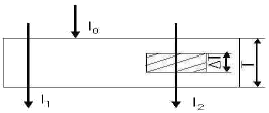
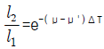
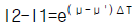
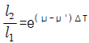
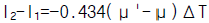
라. l2-l1=-0.434(μ'-μ)ΔT
(정답률: 알수없음)
19. 10Ci의 Co-60 선원으로부터 10m 떨어졌을 때의 선량율은 얼마인가? (단, Co-60 의 RHM값은 1.35로 한다.)
- 0.35mR/h
- 13.5mR/h
- 135mR/h
- 1.35R/h
(정답률: 알수없음)
20. 방사선 투과사진의 촬영시간을 단축하기 위하여 사용하는 스크린은 증감작용 외에 전방산란선을 차단하여 사진콘트라스트를 증가시키는 역할을 하기도 하는데 다음 중 전방 산란선을 차단시키지 못하는 것은?
- 연박증감지
- 금속형광증감지
- 형광증감지
- 금속 박 증감지
(정답률: 알수없음)
2과목: 방사선투과검사
21. X선 필름에 직접 작용하는 연박증감지(Lead Screen)의 효과를 설명한 것으로 틀린 것은?
- 산란방사선의 영향을 감소시켜 투과사진 상의 선명도를 감소시킨다.
- 필름의 사진작용을 증대시킨다.
- 1차방사선에 비해 파장이 긴 산란방사선을 흡수한다.
- 산란방사선의 영향을 감소시켜 일차방사선을 더 강화시킨다.
(정답률: 알수없음)
22. 용접부의 방사선 투과사진에서 매우 좁고 직선의 검은 선들로 용접부의 한쪽 면에 평행하게 나타난 결함은?
- 융합불량
- 용입불량
- 슬러그혼입
- 균열
(정답률: 알수없음)
23. X선 발생장치의 사용시 예열이 필요한 이유는?
- 고전압 발생장치의 과부하를 막기 위해
- X선관의 수명을 늘이기 위해
- 양극의 과열을 막기 위해
- 과전류의 안정을 위해
(정답률: 알수없음)
24. 두께 75mm인 어떤 주조품을 X선 발생장치를 사용하여 위치가 다른 두 곳에서 각각 조사시켜 불연속 부위의 깊이를 결정하고자 할 때 그림에서 표시한 것과 같이 주조품의 밑면에서 불연속부위까지 깊이는 어떻게 표시하는가?
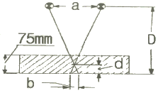
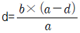
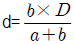
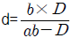
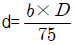
(정답률: 알수없음)
25. 현상된 방사선 투과사진의 의사지시 중 감광유제의 스크래치(scratch)는 판독오류를 범하는 가장 일반적인 원인이다. 이를 확인하는 방법이 아닌 것은?
- 필름의 양면을 반사광을 이용하여 비춰본다.
- 관찰기 표면을 확인한다.
- 이중필름기법으로 촬영한다.
- 재 촬영한다.
(정답률: 알수없음)
26. 다음 중 용입부족의 발생 원인으로 가장 부적합한 것은?
- 운봉속도가 너무 빠를 때
- 용접 전류가 너무 낮을 때
- 루트 간격이 넓을 때
- 홈의 각도가 너무 좁을 때
(정답률: 알수없음)
27. 공업용 X선 발생장치에서 노출표는 제조자로부터 제공받는 다. 이 노출표에서 사진의 농도가 1.5를 기준으로 작성된 경우, 사진의 농도를 3.0으로 노출시키고자 할 때 어떻게 하는 것이 옳은가?
- 노출표에서 읽은 값에 2배를 한다.
- 현상시간을 2배로 한다.
- 적용 관전압을 2배로 한다.
- 필름특성곡선을 이용하여 두 농도차이를 선형척도 값으로 환산 후 그 값을 노출표에서 읽은 값에 곱한다.
(정답률: 알수없음)
28. 낮은 관전압의 X선관창 출구의 재질을 베릴륨(be)으로 사용하는 주된 이유는?
- 밀도가 크기 때문에
- 원자번호가 작기 때문에
- 전도율이 낮기 때문에
- 용융점이 높기 때문에
(정답률: 알수없음)
29. 방사선투과시험에 사용되는 현상제의 기능이 아닌 것은?
- 은이온에 대한 환원제가 되어야 한다.
- 수용성이나 알칼리용액에서 용해성을 가져야 한다.
- 대기 산화에 대한 현저한 안전성 및 저항성을 가져야 한다.
- 무색이고 용해성인 환원물을 만들어야 한다.
(정답률: 알수없음)
30. 일반적인 공업용 감마선 조사장치(amersham 660 Type)에서 그림과 같은 NO-GO 게이지를 사용하는 목적은?
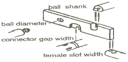
- 선원의 크기를 측정
- 조사기의 오염 여부를 측정
- 원격조작장치의 연결쇠 마모정도를 측정
- 조사기의 선택링 작동상태를 측정
(정답률: 알수없음)
31. 방사선투과시험에서 한 개의 카세트에 감광속도가 서로 다른 여러 장의 필름을 사용하는 주 목적은?
- 부적당한 노출시간 때문에 생기는 재촬영을 방지하기 위해서
- 필름에 유발되는 인공 결함에 의한 재촬영을 방지하기 위해서
- 1회의 노출로써 여러 두께 범위를 처리할 수 있게 하기 위해서
- 필름을 감광시킬 수 있는 산란방사선의 효과를 줄이기 위해서
(정답률: 알수없음)
32. 다음 중 Duty cycle 이 50% 인 X선 발생장치를 10분 작동 시켰다면 최소 대기시간(rest time)은?
- 5분
- 10분
- 15분
- 20분
(정답률: 알수없음)
33. 방사선투과시험의 자동현상에 대한 설명으로 틀린 것은?
- 수동현상에 비해 짧은 시간내에 현상처리된 방사선투과사진을 얻을 수 있다.
- 탱크는 1,000매 처리 또는 1개월의 기간에 따라 현상 약품을 교환해 주어야 한다.
- 수동현상에서보다 높은 온도를 사용한다.
- 현상액 미 정착액에 경화제를 사용한다.
(정답률: 알수없음)
34. 전자방사선투과검사법 중 전자투과법을 적용하기 적당한 재료는?
- 원자번호가 높은 재료
- 원자번호가 낮은 금속재료
- 얇고 흡수도가 낮은 비금속 재료
- 원자번호가 높고, 낮은 물질이 섞여있는 재료
(정답률: 알수없음)
35. 필름 현상처리 과정 중 정지처리에 관한 사항이다. 틀린것은?
- 현상작용을 정지시킨다.
- 현상액이 정착액으로 들어가는 것을 방지한다.
- 공업용 X선 필름에서 3% 빙초산 수용액이 사용된다.
- 할로겐화은 입자를 용해제거하여 흑화은 만 남긴다.
(정답률: 알수없음)
36. 다음 정착제의 성분 중 현상되지 않은 AgBr의 제거 목적으로 사용되는 것은?
- 티오황산암모늄(Ammonium Thiosulfate)
- 염화알루미늄(Aluminium Chloride)
- 아세트 산(Acetic Acid)
- 아황산나트륨(sodium Sulfate)
(정답률: 알수없음)
37. 큰 균열이 있는 부분을 방사선투과 촬영하면 그 균열은 사진상에 어떻게 나타나는가?
- 검고 간헐적이거나 연속적인 선상으로 나타난다.
- 밝고 불규칙적인 선으로 나타난다.
- 밝거나 또는 검은 선으로 나타난다.
- 사진상에 뿌연 부분으로 나타난다.
(정답률: 알수없음)
38. 400kVp X선 발생장치와 가장 비슷한 에너지를 갖는 감마선원은?
- Cs-137
- Ir-192
- Tm-170
- Co-60
(정답률: 알수없음)
39. 방사선투과시험에서 기하학적 불선명도를 감소시키기 위한 조건으로 맞는 것은?
- 선원의 크기가 작은 것을 사용한다.
- 물체와 필름은 수직을 유지한다.
- 촬영할 물체로부터 필름을 멀리한다.
- 물체와 선원간의 거리를 가까이 한다.
(정답률: 알수없음)
40. 주강품 내에서 용탕이 완전히 주형을 채우지 못하여 발생한 결함을 무엇이라 하는가?
- 수축관(Shrinkage)
- 스캐브(Scabs)
- 콜드셧(Cold Shut)
- 미스런(Misrun)
(정답률: 알수없음)
3과목: 방사선안전관리,관련규격및컴퓨터활용
41. 알루미늄 주물의 방사선투과시험 방법(Ks D 0241)에 의한 투과도께의 사용 설명으로 잘못된 것은?
- 투과도계는 가능한 한 방사선축에 수직이 되도록 놓는다.
- 이중벽 촬영의 경우는 투과도계를 하부 벽 필름 바로 아래에 놓는다.
- 투과도계는 촬영 중, 제품의 지정 살 두께 위에 설치한다.
- 제품모양이 복잡한 경우는 필름에서 가장 머릴 떨어진 검사부의 위치에 놓는다.
(정답률: 알수없음)
42. 외부피폭 에방의 3원칙과 거리가 먼 것은?
- 거리를 멀리할 것
- 차폐를 두껍게 할 것
- 작업시간을 짧게 할 것
- 흡입 마스크를 착용할 것
(정답률: 알수없음)
43. 보일러 및 압력용기의 방사선투과검사(ASME Sec.V Art.2)에 따라 사용 중인 농도계는 적어도 얼마마다 교정하도록 규정하고 있는가?
- 90일
- 150일
- 6개월
- 12개월
(정답률: 알수없음)
44. Ir-192의 반감기는 75일 이며, 이것이 체내에 흡수되었을 때 생물학적 반감기가 50일 이라면 유효 반감기는?
- 25일
- 30일
- 125일
- 625일
(정답률: 알수없음)
45. 알루미늄 주물의 방사선투과시험을 KS D 0241에 의해 실시할 때 시험부 및 투과도계 위치에서의 필름 노이도 규정으로 옳은 것은?
- 1.0~4.0
- 1.5~4.0
- 2.0~3.5
- 2.0~3.0
(정답률: 알수없음)
46. 다음 용어 중 물리적 단위가 올바른 것은?
- 흡수선량 : Sv
- 등가선량 : Gy
- 유효선량 : Sv
- 집단선량 : Gy
(정답률: 알수없음)
47. 다음 개인피폭선량 측정기 중 피폭 즉시 피복지점의 추정이 가장 용이한 것은?
- 필름 뱃지
- 포켓 도시메터
- 글라스 도시메터
- TLD 뱃지
(정답률: 알수없음)
48. 보일러 및 압력용기의 방사선투과검사(ASME Sec. V Art.2)의 설명 중 틀린 것은?
- 후방산란선이 필름을 감광시키는지의 여부를 확인하기 위하여는 납글자를 필름홀더 뒤에 부착하여야 한다.
- 판독실은 방사선투과사진으로부터 반사공, 그림자 등이 생기지 않도록 이에 필요한 배경 조명을 가져야 한다.
- 필름 농도 판정을 위해서는 농도계 도는 스텝웨지 비교 필름을 사용해야 한다.
- 투과도계는 유공형만을 사용하는 것으로 한다.
(정답률: 알수없음)
49. 신틸레이션 발광을 이용하는 방사선 검출기용 재료와 관계가 먼 것은?
- Nal
- BF3
- ZnS
- Csl
(정답률: 알수없음)
50. 원자력법 시행령에서 규정한 방사선작업종사자에 대한 연간 등가선량한도가 바르게 된 것은?
- 수정체 - 15mSv
- 피부 - 300mSv
- 손 - 500mSv
- 발 - 50mSv
(정답률: 알수없음)
51. 강용접 이음부의 방사선투과시험 방법(KS B 0845)에 따라 투과사진의 결함분류에서, 모재 두께가 40mm인 강용접부의 투과사진에 길이가 4mm인 용입불량이 관찰되었을 때 결함 분류는?
- 1류
- 2류
- 3류
- 4류
(정답률: 알수없음)
52. 보일러 및 압력용기의 방사선투과검사9ASME Sec.V Art.2)에 의한 검사 방법에 대한 설명으로 틀린 것은?
- 필름에 상으로 나타나야 할 위치표시는 원통형이나 원주형의 종방향 이음부를 단벽촬영시 선원측에 위치시켜야 한다.
- 이중벽 이중상 관찰 방법은 공칭 외경이 4.5인 이상인 기기 내의 용접부 또는 재료에 대하여 실시한다.
- 형상이나 크기 등으로 투과도계를 선원측에 놓을 때, 검사체나 용접부에 놓지 못할 경우 별도의 블록 위에 위치시킨다.
- 촬영에 사용되는 방사선 에너지는 요구되는 농도 및 투과도계 조건을 만족시킬 수 있어야 한다.
(정답률: 알수없음)
53. 강용접 이음부의 방사선투과시험 방법 (KS B 0845)에 따라 모재두께 24mm인 검사체의 제 2종의 결함분류가 2류인 경우 최대 허용될 수 있는 가늘고 긴 슬래그 혼입의 결함길이에 해당되는 것은?
- 6mm
- 8mm
- 12mm
- 16mm
(정답률: 알수없음)
54. 다음 중 방사성동위원소등의 취급업무에 종사하는 자로서 안전관리자로 선임된 자의 보수교육시기는?
- 매 1년마다
- 매 2년마다
- 매 3년마다
- 매 4년마다
(정답률: 알수없음)
55. 보일러 및 압력용기의 방사선투과검사(ASME Sec. V, Art. 2)에 다라 X선으로 방사선투과 촬영을 하여 필름 한 장으로 관찰할 경우 요구되는 방사선 투과사진의 농도는?
- 41.3이상 3.5이하
- 1.5이상 3.5이하
- 1.8이상 4.0이하
- 2.0이상 4.0이하
(정답률: 알수없음)
56. 다음 중 컴퓨터정보통신망의 형태가 아닌 것은?
- Star형
- Tree형
- ISDN형
- Ring형
(정답률: 알수없음)
57. 인터넷에서 파일을 전송하기 위한 서비스로서 서버 컴퓨터로 파일을 전송하거나, 서버 컴퓨터의 파일을 내 컴퓨터로 받아오기 위한 것을 무엇이라 하는가?
- Telnet
- Archie
- FTP
- HTTP
(정답률: 알수없음)
58. 다음 중 정보를 검색하는 엔진에 속하지 않는 것은?
- 라이코스
- 네이버
- 엠파스
- 네스케이프
(정답률: 알수없음)
59. 다음 중 컴퓨터 해킹방지에 대한 예방책으로 옳지 않은 것은?
- 방화벽을 구축한다.
- 보안망 체계를 정비한다.
- 패스워드 파일을 공유한다.
- 정기적인 보안감사를 실시한다.
(정답률: 알수없음)
60. 컴퓨터 시스템이 실제 주기억장치 용량보다 몇 배 이상의 데이터를 저장할 수 있게 하는 기억장치 관리 방법은?
- 전하 결하소자
- 가상기억장치
- 레이저 기억 시스템
- 자기버블기억장치
(정답률: 알수없음)
4과목: 금속재료학
61. 강의 담금질에 따른 용적변화가 가장 큰 조직은?
- 마텐자이트
- 펄라이트
- 오스테나이트
- 페라이트
(정답률: 알수없음)
62. 다음 설명 중 틀린 것은?
- 슬립면은 전위가 이동하는 면으로 원자밀도가 가장 조밀한 면이다.
- 슬립방향은 전위가 이동하는 방향으로 원자밀도가 가장 조밀한 방향이다.
- 슬립계(slip system)란 슬립면과 슬립방향의 조합이다.
- 면심입방정의 슬립계의 수는 48개이다.
(정답률: 알수없음)
63. Y - 합금에 대한 설명으로 옳은 것은?
- Al-Zn 합금에 소량의 Mg 과 Mn 을 첨가한 내열성 합금이다.
- Al-Cu 합금에 소량의 Mg 과 Ni 를 첨가한 내열성 합금이다.
- Al-Si 합금에 소량의 Mg 과 Pb 을 첨가한 내열성 합금이다.
- Al-Fe 합금에 소량의 Mg 과 Sn 을 첨가한 내열성 합금이다.
(정답률: 알수없음)
64. 실루민(Silumin) 합금에 대한 설명으로 옳지 않은 것은?
- Al - Si 계 합금으로서 규소가 약 10~ 14% 정도 함유되어 있다.
- 시효경화성으로 열처리 효과가 크다.
- 극소량(0.⑤~0.1%)의 Na, Sb 등을 첨가하면 조직이 미세하게 된다.
- 개량처리 때의 Na량은 Mg% 가 많을수록 적게, Si% 가 높을 수록 많게 한다.
(정답률: 알수없음)
65. 티타늄의 기계적 성질로 틀린 것은?
- 불순물에 의한 영향이 크다.
- 300℃ 근방에서 강도저하가 있다.
- 소성변형에 대한 제약을 받지 않는다.
- 전신재(展伸材)에서 집합조직에 따라 이방성(異方性)이 나타난다.
(정답률: 알수없음)
66. 그림은 Al-4%Cu 합금의 시효시간에 따른 경도변화를 나타내고 있다. 다음 설명 중 틀린 것은?
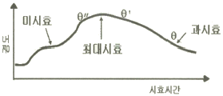
- θ“상은 기지와 정합계면을 이루고 있다.
- θ상은 평형상으로 기지와 부정합계면을 이루고 있다.
- 미시효 조건에서는 전위가 석출물을 자르고 이동할 수 있다.
- θ상이 석출한 조건에서는 전위가 석출물을 자르고 지나갈 수 있다.
(정답률: 알수없음)
67. 불꽃시험 중 유선의 관찰대상이 아닌 것은?
- 색깔
- 길이
- 밝기
- 비중
(정답률: 알수없음)
68. 철강에 있어서 열간취성(hot shortness)의 원인이 되는 원소는?
- 탄소
- 규소
- 황
- 비중
(정답률: 알수없음)
69. 강의 경화능(hardenability) 시험법으로 옳은 것은?
- 조미니시험
- 초음파탐상시험
- 설퍼프린트시험
- 자분탐상시험
(정답률: 알수없음)
70. 모넬 메탈(Monel metal)을 설명한 것 중 옳은 것은?
- Ni 에 Al 을 첨가하여 주조성을 높인 합금이다.
- Ni(60-70%)에 Cu 를 첨가하여 내식성, 내마모성을 향상시킨 합금이다.
- R - monel은 소량의 Si 를 넣어 강도를 향상시키고 절삭성을 개선한 합금이다.
- 일명 백동이라 하며 가공성과 절삭성을 개선한 합금이다.
(정답률: 알수없음)
71. Al 합금이 열처리에서 사용되는 T6처리란?
- 담금질한 후 인공시효
- 담금질한 후 뜨임
- 담금질한 후 노말라이징
- 담금질한 후 풀림
(정답률: 알수없음)
72. 주철은 현미경 조직에서 탄소의 분포상태에 따라 분류하게 된다. 이 때 현미경 조직으로 관찰될 수 없는 조직은?
- 백주철(white cast iron)
- 회주철(gray cast iron)
- 반주철(mottled cast iron)
- 흑주철(black cast iron)
(정답률: 알수없음)
73. 오스테나이트계 스테이리스강의 입계부식 방지 대책으로 옳은 것은?
- Cr 탄화물을 100~200℃로 가열하여 오스테나이트 기지에 용체화처리 후 서냉한다.
- 탄소량을 0.1% 이상 높게 유지한다.
- Cr 탄화물의 입계석출을 억제시키기 위하여 0.2%이상의 P를 첨가한다.
- Ti, Nb의 안정화 원소를 첨가하여 안정화(Stabilization) 시킨다.
(정답률: 알수없음)
74. 0.8%C의 공석강을 마퀜칭 처리하였을 경우 나타나는 조직은?
- 투루스타이트(Troostite)
- 베이나이트(Bainite)
- 레데뷰라이트(Ledeburite)
- 마텐자이트(Martnsite)
(정답률: 알수없음)
75. 철과 강의 5대 주요 불순 원소로 옳은 것은?
- C, Cr, Mn, S, P
- C, Si, Ni, S, P
- C, Si, Mn, S, P
- C, Si, Mn, Cu, P
(정답률: 알수없음)
76. 구상 흑연 주철의 구상화 처리시 페딩(Rading)현상을 방지하기 위한 조치방법으로 옳은 것은?
- Mg 처리 용탕의 방치시간을 짧게 한다.
- 미량의 Mg 으로도 구상화에는 문제가 없다.
- 불순물이 많은 용탕에서는 잔류 Mg 량을 적게 한다.
- Mg 처리 용탕을 주형에 주입되기 전 시간을 되도록 오래 유지한다.
(정답률: 알수없음)
77. 금속재료 경도시험 방법 중 압입에 의한 것이 아닌 것은?
- 쇼어경도 시험방법
- 비커스경도 시험방법
- 로크웰경도 시험방법
- 브리넬경도 시험방법
(정답률: 알수없음)
78. WC 분말과 Co 분말을 압축성형하여 약 1,400℃로 소결시키면 매우 단단한 금속이 되어 바이트와 같은 공구에 이용되는 금속은?
- 초경합금
- 고속도강
- 화이트메탈
- 엘렉트론합금
(정답률: 알수없음)
79. 다음 중 노말라이징(normalizing)의 목적으로 틀린 것은?
- 내부 응력 제거
- 결정립 미세화
- 취성 증대
- 주조 및 과열조직의 개선
(정답률: 알수없음)
80. Fe-C 상태도에서 0.6% C인 탄소강의 경도를 계산하면 얼마인가? (단, ferrite는 HB 는 90, pearlite의 HB 는 200 이다.)
- 162.5
- 172.5
- 182.5
- 192.5
(정답률: 알수없음)
5과목: 용접일반
81. 모재는 전혀 녹이지 않고, 모재보다 융융점이 낮은 금속을 녹여 표면장력(원자간의 확산 침투)으로 접합하는 것은?
- 융접
- 압접
- 납땜
- 저항용접
(정답률: 알수없음)
82. 용접전류 300A, 아크전압 35V, 아크길이 3㎜, 용접속도 20cm/min의 용접 조건으로 피복 아크용접을 실시할 경우 아크가 단위길이 1cm당 발생하는 전기적 에너지는?
- 7560 joule/cm
- 9450 joule/cm
- 15750 joule/cm
- 31500 joule/cm
(정답률: 알수없음)
83. 다음 중 가스의 연소열을 이용하여 용접하는 것은?
- 원자수소 용접
- 산소 아세틸렌 용접
- 일렉트로 슬랙 용접
- 탄산가스 아크 용접
(정답률: 알수없음)
84. 강의 용착 금속 결함 중 은점(Fish eye) 발생의 가장 큰 원인이 되는 가스로 가장 적합한 것은?
- O2
- N2
- CO2
- H2
(정답률: 알수없음)
85. 서브머지드 아크용접(Submerged Arc Welding)에서 용접부에 생기기 쉬운 결함으로 기공(Blow hold)은 비드(bead)중앙에 발생하는 일이 많다. 방지대책으로 적합하지 않는 것은?
- 후럭스(flux)를 잘 건조하여 습기를 제거한다.
- 용접심선과 이음부의 녹, 기름, 수분, 습기 등을 제거한다.
- 콤포지션을 잘 건조하여 습기를 제거한다.
- 용접속도를 증가시켜 용융금속 응고를 빠르게 한다.
(정답률: 알수없음)
86. 원형판 전극 사이에 피용접물을 끼워 전극에 압력을 가하며 전극을 회전시켜 연속적으로 점용접을 반복하는 용접법은?
- 스포트 용접
- 프로젝션 용접법
- 심 용접법
- 플래시 버트 용접법
(정답률: 알수없음)
87. 다음 중 전기 저항용접의 종류에 속하지 않는 것은?
- 업셋 용접
- 퍼커션 용접
- 포일심 용접
- 테르밋 용접
(정답률: 알수없음)
88. 용접홈 안의 용접 또눈 필릿용접시 전류가 너무 낮아 아크열이 홈의 밑부분까지 충분히 용융시키지 못했을 때 생기는 결함은?
- 오버 랩
- 용입불량
- 언더 컷
- 슬래그 혼입
(정답률: 알수없음)
89. 다음 중 불활성 가스 아크용접에서 청정작용(淸淨作用)이 가장 강력한 것은?
- He 가스로서 DCSP
- He 가스로서 DCRP
- Ar 가스로서 DCSP
- Ar 가스로서 DCRP
(정답률: 알수없음)
90. 교류 아크 용접기에서 AW-300 이란 표시가 뜻하는 것은?
- 2차 최대 전류 300A
- 정격 2차 전류 300A
- 최고 2차 무부하 전압 300A
- 정격 사용률 300A
(정답률: 알수없음)
91. AW-300의 아크 용접기로 220[A]의 용접전류를 사용하여 10시간 용접했다. 이 경우 허용 사용율은 약 몇 % 인가?
- 83.7
- 837
- 61.4
- 614
(정답률: 알수없음)
92. 용접시 발생하는 잔류응력이 구조물에 미치는 영향이 아닌것은?
- 취성파괴
- 피로강도
- 부식
- 재결정 온도
(정답률: 알수없음)
93. 수중절단에 가장 많이 사용하는 가스는?
- 수소
- 아르곤
- 헬륨
- 탄산가스
(정답률: 알수없음)
94. 피복 금속 아크 용접에서 정극성에 관한 설명으로 옳은 것은?
- 용접봉의 용융이 늦고 모재의 용입이 깊어진다.
- 용접봉 용융 속도가 빠르고 모재의 용입이 얕아진다.
- 용접봉의 용융 속도에는 극성과 관계없으나 용입은 깊어진다.
- 용접봉의 용융속도, 용입 모두 극성과는 관계없다.
(정답률: 알수없음)
95. 다음 중에서 대전류 용접이 가능하고 열효율이 가장 높은 용접은?
- 피복 아크 용접
- 서브머지드 아크 용접
- 불활성 가스 아크 용접
- 탄산 가스 아크 용접
(정답률: 알수없음)
96. 아세틸렌 가스에 포함하고 있는 불순물이 영향이 아닌것은?
- 석회 분말은 용착금속을 약하게 하고 역류 역화의 원인이 된다.
- 인화수소, 황화수소는 용접부의 강도를 저하시키고 용접장치를 부식시킨다.
- 질소 등 기타 불순물은 아세틸렌 불꽃의 온도를 높혀 작업능률을 향상시킨다.
- 인(p)은 결정립의 미세화를 저지시킨다.
(정답률: 알수없음)
97. 가스용접 작업시 역화에 대한 대책으로 틀린 것은?
- 아세틸렌을 차단한다.
- 팁을 물로 식힌다.
- 토치의 기능을 점검한다.
- 안전기에 물을 배고 다시 사용한다.
(정답률: 알수없음)
98. TIG 용접에서 알루미늄 후판의 용접 전원으로 가장 적합한 것은?
- ACHF 전원
- DCSP 전원
- DCFP 전원
- 모든 전원이 적합
(정답률: 알수없음)
99. 1차 입력전원이 24.2[KVA]인 피복 아크용접기를 1차 전원 전압 220[V]에 접속하고자 할 경우 퓨즈(fuse) 용량으로 가장 적합한 것은?
- 220[A]
- 200[A]
- 110[A]
- 100[A]
(정답률: 알수없음)
100. 가스용접 중에 모재가 용융 상태로 되면 공기 중의 산소나 질소가 접초고디어 산화 및 질화 작용이 대단히 심하게 되는데, 다음 금속 중에서 가스용접 할 때 용제 (flux)를 사용하지 않아도 되는 용접금속은?
- 주철
- 연강
- 구리합금
- 알루미늄
(정답률: 알수없음)